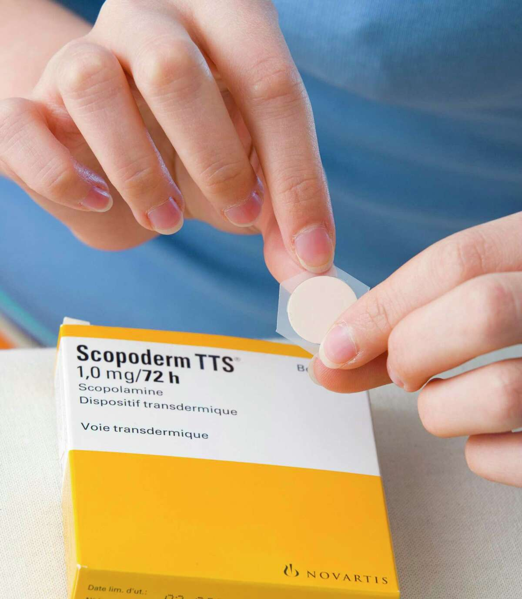
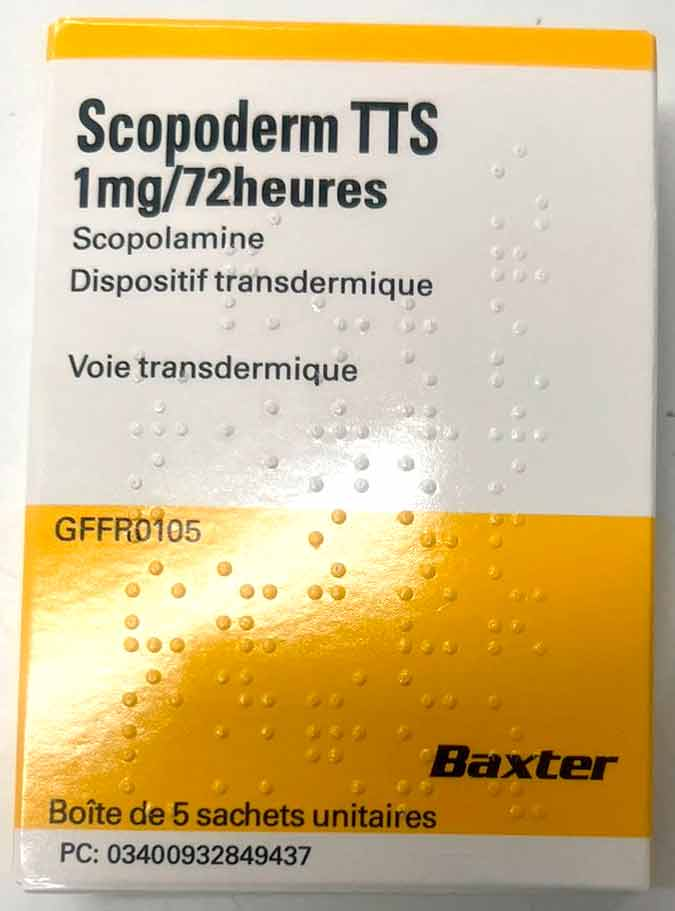
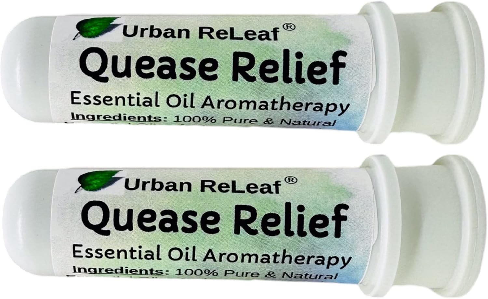
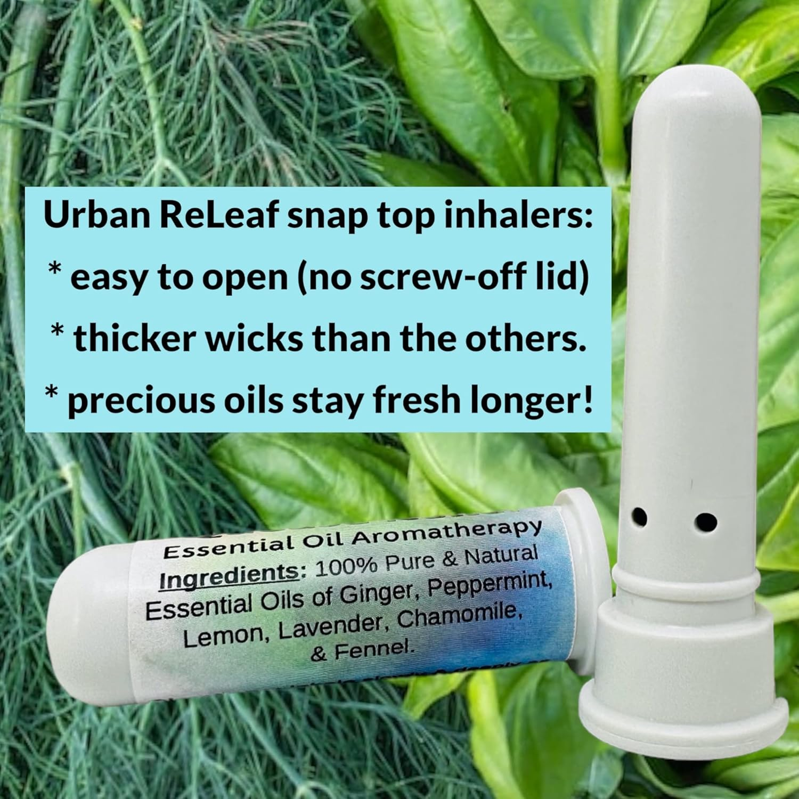
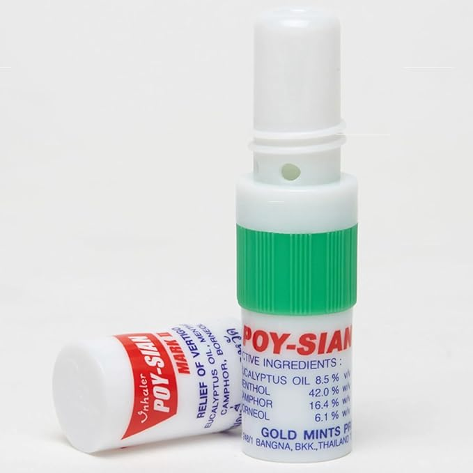
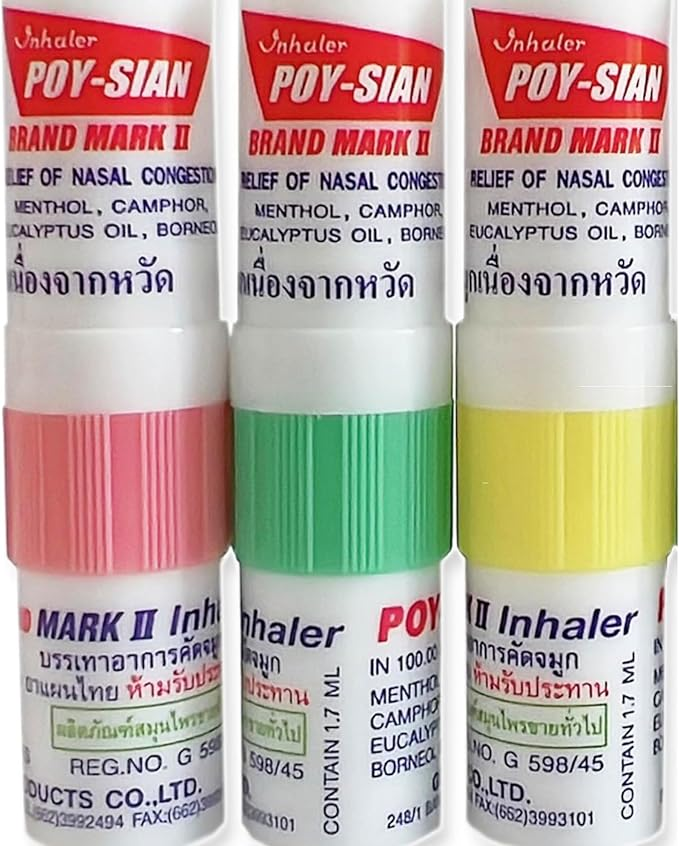

Почему укачивает и как с этим справляться — от механизма до конкретных средств
При качке на яхте мозг получает противоречивые сигналы: глаза видят неподвижный салон, а вестибулярный аппарат фиксирует постоянное движение. Этот конфликт и запускает симптомы.
Именно поэтому лучшая точка на судне — на палубе, смотреть на горизонт: визуальный канал и вестибулярный начинают согласовываться.


Блокирует передачу сигналов от вестибулярного аппарата к мозгу — тошнота не запускается в принципе.
За 4–6 часов до выхода в море. За ухо. Держит до 3 суток.
Клинически доказана. Золотой стандарт профилактики морской болезни — применяется в морском флоте.
Лёгкая сухость во рту, возможна сонливость, нельзя протирать глаза рукой с пластырем.
Без рецепта · Быстрое действие · Дополнение к пластырю


Имбирь + перечная мята + лаванда + эвкалипт. Без камфоры, без резкого ментола.
Имбирь действует на серотониновые рецепторы — тот же путь, что и вестибулярная тошнота. Не просто «свежесть», а прицельное воздействие.
До 6 месяцев после вскрытия. Мягкий запах — не раздражает окружающих на судне.


Ментол + камфора + эвкалипт + масло перечной мяты. Резкий, освежающий запах.
Раздражает рецепторы носа, создаёт ощущение свежести. Субъективно снижает дискомфорт у части людей.
Не содержит имбиря. Действие — через ощущение, а не через механизм тошноты. Сильный запах может мешать на борту.
| Urban ReLeaf ★ | Poy-Sian | |
|---|---|---|
| Цель | Тошнота и укачивание — прямое назначение | Нос, свежесть, общий дискомфорт |
| Ключевой ингредиент | Имбирь — действует на серотониновые рецепторы | Ментол + камфора — раздражают рецепторы носа |
| Запах | Мягкий, травяной — комфортен на борту | Резкий ментол — может мешать другим |
| Срок после вскрытия | 6 месяцев | Несколько недель |
| Механизм | Химический — через нейрорецепторы | Сенсорный — через ощущение свежести |
| Где купить | Amazon.com / Amazon.de | Ubuy.rs → Белград, Amazon.com.br → Рио |
| Вывод | Основной выбор | Запасной вариант / если нет Quease Relief |
Оптимальный набор для выхода в море: Scopoderm пластырь (нужен рецепт или поездка в Словению) — клеить за 4–6 ч до, это основная защита. Urban ReLeaf Quease Relief — в кармане на борту, если почувствовали тошноту. Poy-Sian — если не нашли Quease Relief, вполне рабочая подстраховка. Комбинация пластырь + ингалятор перекрывает оба сценария: профилактику и быстрое облегчение.